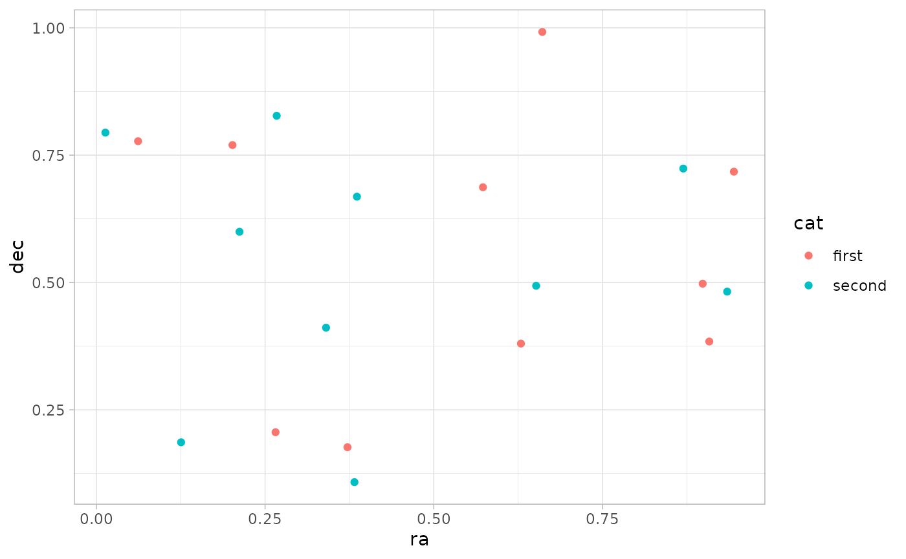
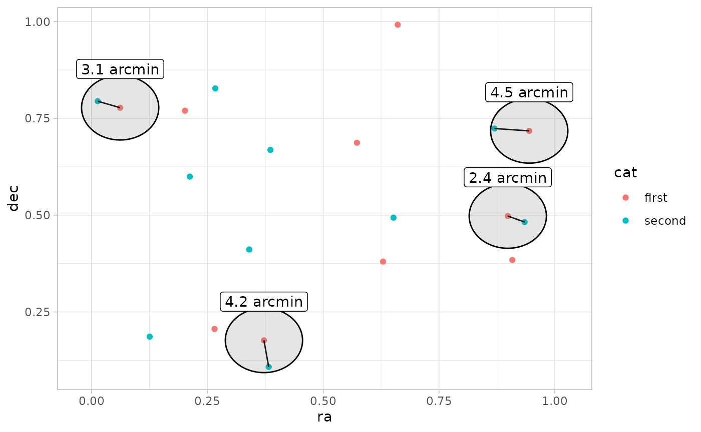
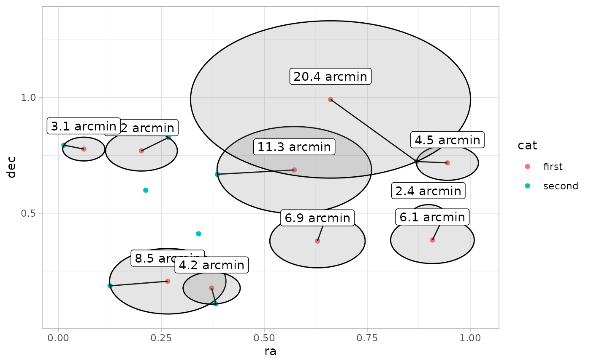
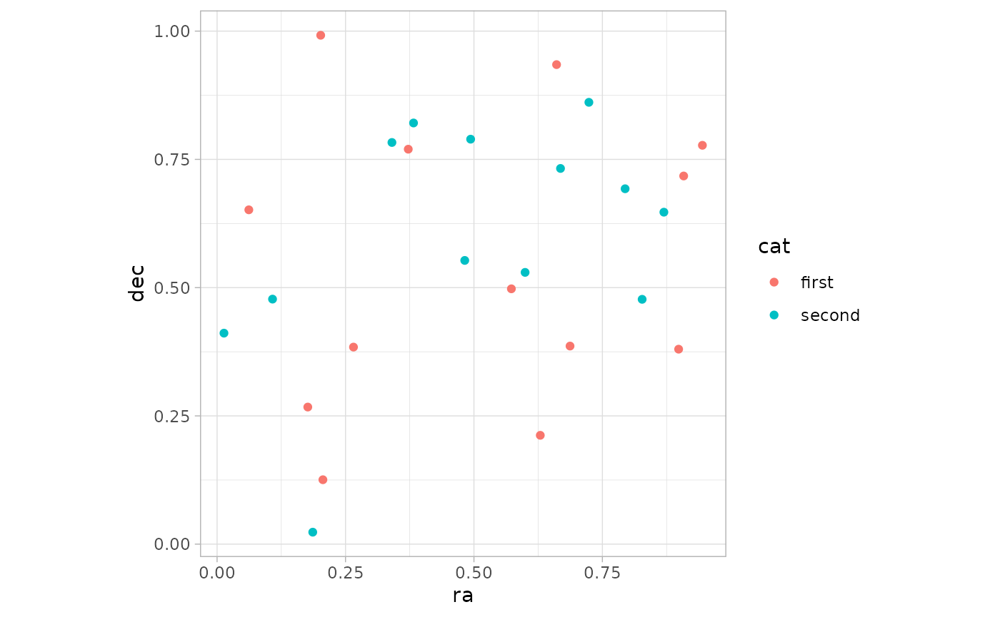
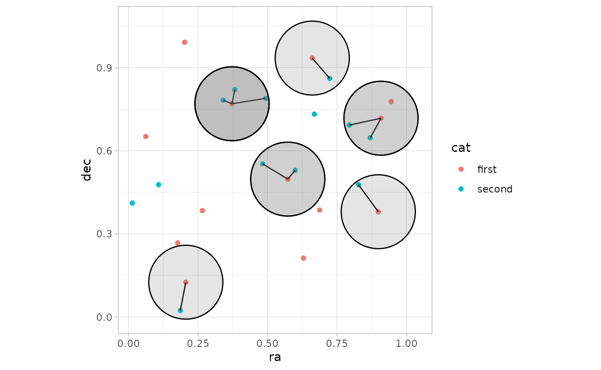
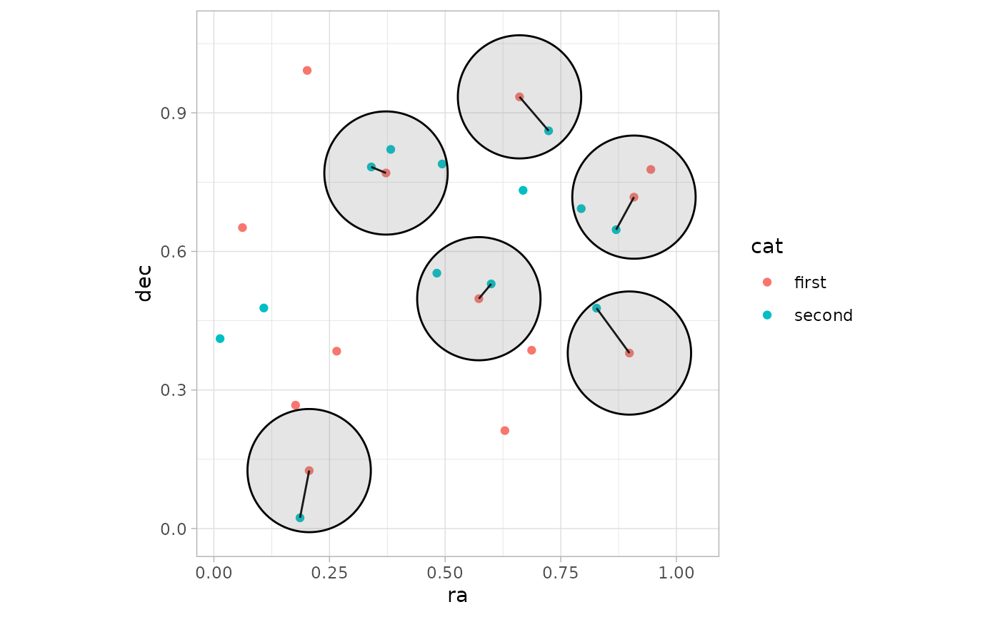

Catalog matching joins
coord_matching.Rmd
library(astrocoords)
#>
#> Attaching package: 'astrocoords'
#> The following object is masked from 'package:graphics':
#>
#> frame
library(ggplot2)
theme_set(theme_light())TL;DR
-
coord_inner_join()keeps only rows fromxthat have matches inywithinmax_sep. -
coord_left_join()keeps all rows fromx; unmatched rows getNAfromy. -
coord_right_join()keeps all rows fromy; unmatched rows getNAfromx. -
coord_full_join()keeps all rows from both tables. -
coord_nearest_join()returns one nearest match inyfor each row inx. -
multiple = "all"keeps all matches inside the radius, whilemultiple = "closest"keeps only one match per row inx.
Understanding joins
set.seed(1)
N <- 10
df1 <- data.frame(
ra = runif(N),
dec = runif(N),
cat = "first"
)
df2 <- data.frame(
ra = runif(N),
dec = runif(N),
cat = "second"
)
df12 <- do.call(rbind, list(df1, df2))
df1$sc <- ra_dec(df1$ra, df1$dec)
df2$sc <- ra_dec(df2$ra, df2$dec)
df12$sc <- c(df1$sc, df2$sc)
p1 <- df12 |>
ggplot(aes(ra, dec, color = cat)) +
geom_point()
p1
Inner join within radius
df12_intersect <- df1 |>
coord_inner_join(df2, max_sep = 5, unit = "arcmin")
p1 +
geom_segment(
data = df12_intersect,
aes(x = ra.x, xend = ra.y, y = dec.x, yend = dec.y),
color = "black"
) +
ggforce::geom_circle(
data = df12_intersect,
aes(x0 = ra.x, y0 = dec.x, r= 5/60),
fill = "grey50",
alpha = 0.2,
inherit.aes = FALSE
) +
geom_label(
data = df12_intersect,
aes(ra.x, dec.x + 0.1, label = paste(round(sep, 1), "arcmin")),
inherit.aes = FALSE,
)
Nearest-neighbor join
df12_nearest <- df1 |>
coord_nearest_join(df2, unit = "arcmin")
p1 +
geom_segment(
data = df12_nearest,
aes(x = ra.x, xend = ra.y, y = dec.x, yend = dec.y),
color = "black"
) +
ggforce::geom_circle(
data = df12_nearest,
aes(x0 = ra.x, y0 = dec.x, r = sep/60),
fill = "grey50",
alpha = 0.2,
inherit.aes = FALSE
) +
geom_label(
data = df12_nearest,
aes(ra.x, dec.x + 0.1, label = paste(round(sep, 1), "arcmin")),
inherit.aes = FALSE
)
Left vs right vs full join
df1 |>
coord_left_join(df2, max_sep = 5, unit = "arcmin")
#> ra.x dec.x cat.x sc ra.y dec.y
#> 1 0.26550866 0.2059746 first 00h01m03.7s +00°12'22" NA NA
#> 2 0.37212390 0.1765568 first 00h01m29.3s +00°10'36" 0.38238796 0.1079436
#> 3 0.57285336 0.6870228 first 00h02m17.5s +00°41'13" NA NA
#> 4 0.90820779 0.3841037 first 00h03m38.0s +00°23'03" NA NA
#> 5 0.20168193 0.7698414 first 00h00m48.4s +00°46'11" NA NA
#> 6 0.89838968 0.4976992 first 00h03m35.6s +00°29'52" 0.93470523 0.4820801
#> 7 0.94467527 0.7176185 first 00h03m46.7s +00°43'03" 0.86969085 0.7237109
#> 8 0.66079779 0.9919061 first 00h02m38.6s +00°59'31" NA NA
#> 9 0.62911404 0.3800352 first 00h02m31.0s +00°22'48" NA NA
#> 10 0.06178627 0.7774452 first 00h00m14.8s +00°46'39" 0.01339033 0.7942399
#> cat.y sep
#> 1 <NA> NA
#> 2 second 4.162595
#> 3 <NA> NA
#> 4 <NA> NA
#> 5 <NA> NA
#> 6 second 2.371845
#> 7 second 4.513536
#> 8 <NA> NA
#> 9 <NA> NA
#> 10 second 3.073374
df1 |>
coord_right_join(df2, max_sep = 5, unit = "arcmin")
#> ra.x dec.x cat.x sc ra.y dec.y
#> 1 0.89838968 0.4976992 first 00h03m35.6s +00°29'52" 0.93470523 0.4820801
#> 2 NA NA <NA> NA 0.21214252 0.5995658
#> 3 NA NA <NA> NA 0.65167377 0.4935413
#> 4 NA NA <NA> NA 0.12555510 0.1862176
#> 5 NA NA <NA> NA 0.26722067 0.8273733
#> 6 NA NA <NA> NA 0.38611409 0.6684667
#> 7 0.06178627 0.7774452 first 00h00m14.8s +00°46'39" 0.01339033 0.7942399
#> 8 0.37212390 0.1765568 first 00h01m29.3s +00°10'36" 0.38238796 0.1079436
#> 9 0.94467527 0.7176185 first 00h03m46.7s +00°43'03" 0.86969085 0.7237109
#> 10 NA NA <NA> NA 0.34034900 0.4112744
#> cat.y sep
#> 1 second 2.371845
#> 2 second NA
#> 3 second NA
#> 4 second NA
#> 5 second NA
#> 6 second NA
#> 7 second 3.073374
#> 8 second 4.162595
#> 9 second 4.513536
#> 10 second NA
df1 |>
coord_full_join(df2, max_sep = 5, unit = "arcmin")
#> ra.x dec.x cat.x sc ra.y dec.y
#> 1 0.26550866 0.2059746 first 00h01m03.7s +00°12'22" NA NA
#> 2 0.37212390 0.1765568 first 00h01m29.3s +00°10'36" 0.38238796 0.1079436
#> 3 0.57285336 0.6870228 first 00h02m17.5s +00°41'13" NA NA
#> 4 0.90820779 0.3841037 first 00h03m38.0s +00°23'03" NA NA
#> 5 0.20168193 0.7698414 first 00h00m48.4s +00°46'11" NA NA
#> 6 0.89838968 0.4976992 first 00h03m35.6s +00°29'52" 0.93470523 0.4820801
#> 7 0.94467527 0.7176185 first 00h03m46.7s +00°43'03" 0.86969085 0.7237109
#> 8 0.66079779 0.9919061 first 00h02m38.6s +00°59'31" NA NA
#> 9 0.62911404 0.3800352 first 00h02m31.0s +00°22'48" NA NA
#> 10 0.06178627 0.7774452 first 00h00m14.8s +00°46'39" 0.01339033 0.7942399
#> 11 NA NA <NA> NA 0.21214252 0.5995658
#> 12 NA NA <NA> NA 0.65167377 0.4935413
#> 13 NA NA <NA> NA 0.12555510 0.1862176
#> 14 NA NA <NA> NA 0.26722067 0.8273733
#> 15 NA NA <NA> NA 0.38611409 0.6684667
#> 16 NA NA <NA> NA 0.34034900 0.4112744
#> cat.y sep
#> 1 <NA> NA
#> 2 second 4.162595
#> 3 <NA> NA
#> 4 <NA> NA
#> 5 <NA> NA
#> 6 second 2.371845
#> 7 second 4.513536
#> 8 <NA> NA
#> 9 <NA> NA
#> 10 second 3.073374
#> 11 second NA
#> 12 second NA
#> 13 second NA
#> 14 second NA
#> 15 second NA
#> 16 second NAMultiple matches: all vs closest
set.seed(1)
N <- 13
df1 <- data.frame(
ra = runif(N),
dec = runif(N),
cat = "first"
)
df2 <- data.frame(
ra = runif(N),
dec = runif(N),
cat = "second"
)
df12 <- do.call(rbind, list(df1, df2))
df1$sc <- ra_dec(df1$ra, df1$dec)
df2$sc <- ra_dec(df2$ra, df2$dec)
df12$sc <- c(df1$sc, df2$sc)
p1 <- df12 |>
ggplot(aes(ra, dec, color = cat)) +
geom_point() +
coord_fixed(ratio = 1)
p1
multiple="all"
MAX_SEP <- 8
df12_intersect <- df1 |>
coord_inner_join(df2, max_sep = MAX_SEP, unit = "arcmin")
p1 +
geom_segment(
data = df12_intersect,
aes(x = ra.x, xend = ra.y, y = dec.x, yend = dec.y),
color = "black"
) +
ggforce::geom_circle(
data = df12_intersect,
aes(x0 = ra.x, y0 = dec.x, r = MAX_SEP/60),
fill = "grey50",
alpha = 0.2,
inherit.aes = FALSE
)
multiple="closest"
df12_intersect <- df1 |>
coord_inner_join(df2, max_sep = MAX_SEP, unit = "arcmin", multiple = "closest")
p1 +
geom_segment(
data = df12_intersect,
aes(x = ra.x, xend = ra.y, y = dec.x, yend = dec.y),
color = "black"
) +
ggforce::geom_circle(
data = df12_intersect,
aes(x0 = ra.x, y0 = dec.x, r= MAX_SEP/60),
fill = "grey50",
alpha = 0.2,
inherit.aes = FALSE
)